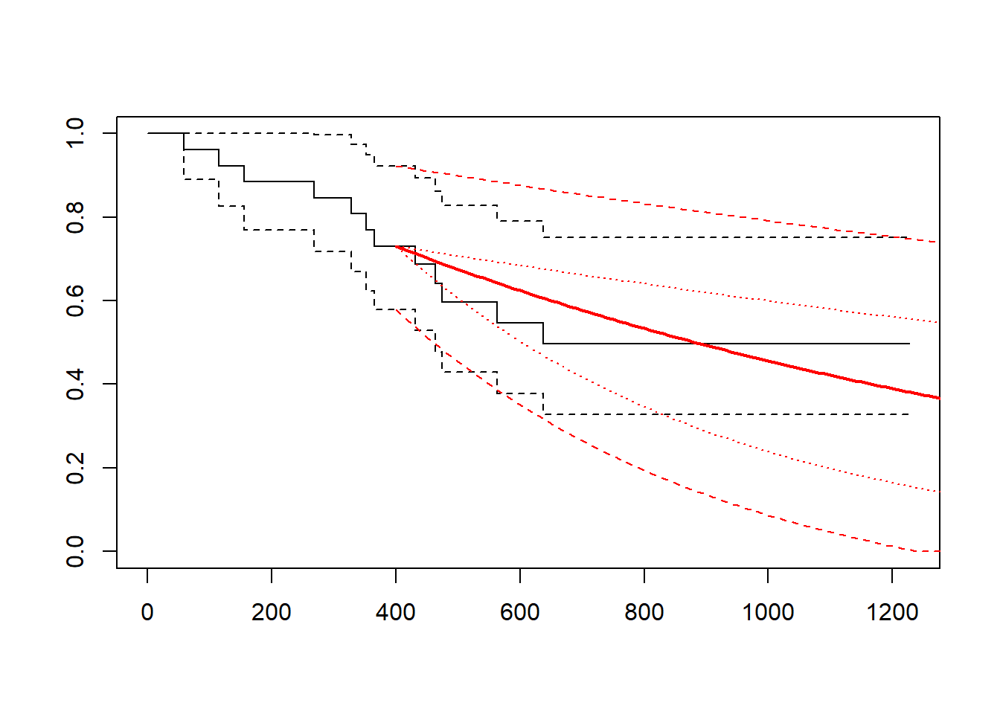
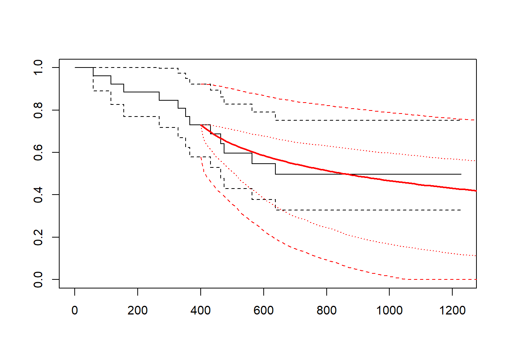

library(flexsurv)
library(dplyr)
# survival data
# kaplan-meier before cut point
fitg <- flexsurvreg(formula = Surv(futime, fustat) ~ 1, data = ovarian, dist = "gompertz")
plot(fitg)Other hybrid methods
Gelber method
Background
A method similar to that developed by LRIG involved fitting an appropriate model to the tail of the Kaplan Meier curve and using the estimated model combined with the Kaplan Meier to produce an estimate of total mean survival. (Gelber, Goldhirsch, and Cole 1993) state that this method is of particular use when it is easier to fit an appropriate parametric model to the tail of a Kaplan Meier rather than to the Kaplan Meier as a whole. In the method proposed by (Gelber, Goldhirsch, and Cole 1993) log-cumulative hazard probability plots are used to determine the appropriate parametric model and to determine the appropriate values for the point at which the parametric curve takes over from the Kaplan Meier. Both the Gelber method and the LRIG Exponential method are likely to be sensitive to the point at which the parametric model takes over from the Kaplan Meier, \(s_0\), and therefore if either of these methods are used it is important to provide clear rationale for the switch point using statistical analysis.
\[ \hat{S}(t) = \hat{S}_{KM}(s_0) S^*(t)/S^*(s_0) \mbox{ for } t > s_0 \] This formulation from the original paper takes a combined (product) survival of the Kaplan-Meier and parametric curve after time \(s_0\). In the following we will estimate a single extrapolated curve instead for simplicity.
R Examples
We will use the ovarian data set from the flexsurv package. First, let us show how to get the KM and parametric fit using the total data set.
Now, let us pick an arbitrary cut point at time 100 and find the KM probability of survival at that time.
fit_km <- survfit(formula = Surv(futime, fustat) ~ 1, data = ovarian)
t_cutpt <- 400
p_cutpt <- min(fit_km$surv[fit_km$time < t_cutpt])We wish to fit the parametric curve to the data after the cut point so remove the data before this time.
data <- mutate(ovarian, cutpt = futime < t_cutpt)
data <- split(data, f = data$cutpt)and fit the curve, in this case a gompertz,
fitcp <- flexsurvreg(formula = Surv(futime - t_cutpt, fustat) ~ 1, data = data$`FALSE`, dist = "gompertz")It just remains to summarise the fitted curve and plot it with the KM.
summ <- summary(fitcp, t = seq(0, 1200, 10))
S_cp <- summ[[1]]$est[summ[[1]]$time == 400]
plot(fit_km)
lines(x = summ[[1]][["time"]] + t_cutpt,
y = summ[[1]][["est"]]*p_cutpt,
type = "l", col = "red", lwd = 2)Notice that p_cutpt is the KM survival probability at the cut point \(\hat{S}_{KM}(s_0)\).
For convenience, we have written a package to do all of these steps called gelber_hybrid_curve.
gelber_hybrid_curve() function
gelber_hybrid_curve <- function(formula = Surv(futime, fustat) ~ 1,
data = ovarian,
dist = "weibull",
t_cutpt = 100, ...) {
# kaplan-meier before cut point
fit_km <- survfit(formula = formula, data = data)
plot(fit_km, ...)
xylims <- par("usr")
data_cutpt <- fitcp <- summ <- list()
for (i in seq_along(t_cutpt)) {
# what is S_hat at cut point?
p_cutpt[i] <- min(fit_km$surv[fit_km$time < t_cutpt[i]])
ucl_cutpt <- min(fit_km$upper[fit_km$time < t_cutpt[i]])
lcl_cutpt <- min(fit_km$lower[fit_km$time < t_cutpt[i]])
u95_km <- ucl_cutpt[i] - p_cutpt
l95_km <- p_cutpt[i] - lcl_cutpt
data_cutpt[[i]] <-
data |>
filter(futime >= t_cutpt[i]) |>
mutate(futime = futime - t_cutpt[i])
# parametric curve after cut point
fitcp[[i]] <- flexsurvreg(formula = formula,
data = data_cutpt[[i]],
dist = dist)
summ[[i]] <- summary(fitcp[[i]], t = seq(0, xylims[2], 10))
lines(x = summ[[i]][[1]][["time"]] + t_cutpt[i],
y = summ[[i]][[1]][["est"]]*p_cutpt[i],
type = "l", col = "red", lwd = 2)
if (length(t_cutpt) == 1) {
lines(x = summ[[i]][[1]][["time"]] + t_cutpt[i],
y = pmax(0, summ[[i]][[1]][["lcl"]]*p_cutpt[i] - l95_km),
type = "l", col = "red", lty = 2)
lines(x = summ[[i]][[1]][["time"]] + t_cutpt[i],
y = pmax(0, summ[[i]][[1]][["lcl"]]*p_cutpt[i]),
type = "l", col = "red", lty = 3)
lines(x = summ[[i]][[1]][["time"]] + t_cutpt[i],
y = pmin(1, summ[[i]][[1]][["ucl"]]*p_cutpt[i] + u95_km),
type = "l", col = "red", lty = 2)
lines(x = summ[[i]][[1]][["time"]] + t_cutpt[i],
y = pmin(1, summ[[i]][[1]][["ucl"]]*p_cutpt[i]),
type = "l", col = "red", lty = 3)
}
}
}This can be used to explore the effect of using different cut points and different distributions.
gelber_hybrid_curve(t_cutpt = 400, dist = "exp")
gelber_hybrid_curve(t_cutpt = 400, dist = "lognormal")
gelber_hybrid_curve(t_cutpt = c(100, 400, 600), xlim = c(0, 2000))gelber_hybrid_curve(t_cutpt = c(100, 400, 600), dist = "lognormal", xlim = c(0, 2000))References
Gelber, Richard D., Aron Goldhirsch, and Bernard F. Cole. 1993. “Parametric extrapolation of survival estimates with applications to quality of life evaluation of treatments.” Control. Clin. Trials 14 (6): 485–99. https://doi.org/10.1016/0197-2456(93)90029-D.